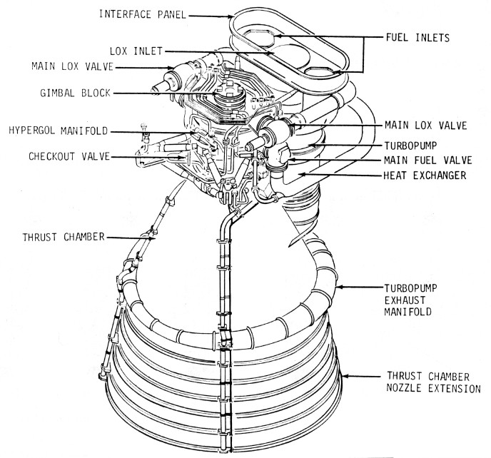
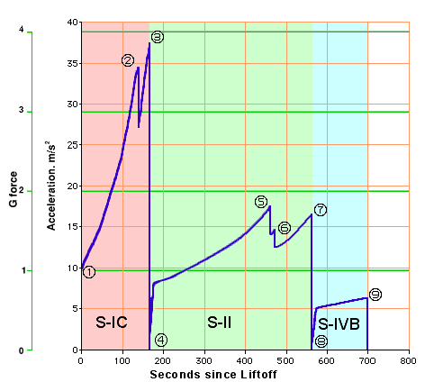

| Journal Home Page |
A burn is the process of firing a rocket motor(s) in order to change the trajectory of a spacecraft. For this reason, burns are always preceded by elaborate checks to make sure the spacecraft is pointed in the right direction. The burn itself is carefully monitored to make sure it's neither too short (under burn), nor too long (over burn). At the end of the burn, the difference between the expected an actual change in velocity, the so called residuals, is carefully looked at to make sure the burn had the desired effect.
The Capcom (short for capsule communicator, a term left over from the Mercury days) was essentially the single point of contact between the astronauts and the rest of the Mission Control team. The Capcom was also an astronaut who had gone through similar training and had often even flown on a similar mission. This made him an excellent filter between the crew and the rest of Mission Control.
As the result of the uncontained failure of an oxygen tank and the subsequent loss of all SM systems on the Apollo 13 flight, numerous changes were made to the CSM, both to prevent similar problems and to help the crew to better deal with any possible future in-flight emergencies. The oxygen tank was extensively modified to remove not only the destratification fans and other potential ignition sources, but also all burnable materials (including aluminum). A third oxygen tank was added on the other side of the SM from the two original tanks. A 400 amp-hour battery and a contingency water system were added to provide power and water in case of a complete loss of the fuel cells. For a complete list of the Apollo 14 improvements, please have a look at Apollo Lunar Surface Journal's section on Apollo 14.
The DOI burn was performed behind the Moon, roughly opposite to the intended landing point. It lowered the perilune to the optimal altitude for starting the actual lunar landing. On the Apollo 10, 11, and 12 missions, this burn was done using the LMs DPS after it separated from the CSM. However, on the later, more scientific oriented missions, the ability to explore the lunar surface was limited by the ability of the LM to land the astronauts and their experiments on the surface and to return them and their rocks to orbit. On the later missions, in order to save LM fuel, the CM's SPS was used for the DOI burn. This lowered the perilune of both spacecraft. After they separated, the CSM did another burn to return to a circular orbit. Of course for every kilo of LM fuel that was saved, the CSM had to burn several kilos lowering both itself and the LM and then returning to a circular orbit. This also increased the amount of the payload that the Saturn V had to send towards the Moon. However, both the Saturn V and the CSM had ample reserves.
Although it requires knowledge of orbital mechanics, planning a flight to the Moon is actually more of an art than a science. In fact, any talented person with a little high school physics and a small computer, can fairly accurately compute all the burns of an Apollo mission. What made the task challenging was coming up with reasonable compromises between achieving the maximum of mission objectives while keeping the risk to the success of the mission acceptably small and the risk to the astronauts very small. A good example of this is the trade-off between carrying extra hovering fuel that may be needed to find a safe landing spot and carrying additional scientific equipment. Its also necessary to know what kind of problems could arise and to make the mission robust enough to minimize the impact of these problems. Not having enough reserve capacity would allow even minor problems to jeopardize the mission, but requiring too much backup would greatly reduce the useful payload. The ability to make these comprises accurately made Apollo possible. The ability to come up with the right mixture of bold leaps and cautious steps in both the planning of the missions and the design of the launch vehicle and spacecraft made Apollo an unprecedented and unmatched success.
If a spacecraft is aimed carefully enough, it can leave the Earth, fly out in front of the onrushing Moon, be pulled around the back of the Moon by its gravity and hurled back towards the Earth, and finally make a perfect reentry into the Earths atmosphere. Although this level of accuracy is hard to obtain, it is quite easy to come close enough that only minor mid course correction burns are necessary. These trajectories are regarded as being inherently safe since the spacecraft is already on a its way back to a safe landing as soon as it leaves Earth orbit.
An F-1 engine weighs about 8 tons [8.4 metric tons], is 19 feet [5.8 m] long, and has a nozzle exit diameter of over 12 feet [3.7 m]. It's a single start, bipropellant engine burning LOX (liquid oxygen) and RP-1 (rocket propellant one, essentially highly refined kerosene). At lift off it produces 1,520,000 pounds [6,760 kN] of thrust. This increases to about 1,780,000 pounds [7,920 kN] at center engine cut-off. A large combustion chamber and nozzle make up the bulk of the engine. The top of the combustion chamber consists of an injector plate through which RP-1 fuel and LOX are injected at high pressure. Above the injector is the LOX dome which also transmits the force of the thrust from the engine to the rocket's structure. A single-shaft turbopump is mounted beside the combustion chamber. The turbine is at the bottom and is driven by the exhaust gas from burning RP-1 and LOX in a fuel-rich mixture in a gas generator. After powering the turbine, the exhaust gas passes through a heat exchanger, then to a wrap-around exhaust manifold which feeds it into the periphery of the engine bell. The final task for these hot gases is to cool and protect the nozzle extension from the far hotter exhaust of the main engine itself. Above the turbine, on the same shaft, is the fuel pump with two inlets from the fuel tank and two outlets going, via shutoff valves, to the injector plate. A line from one of these 'feeds' supplies the gas generator with fuel. Fuel is also used within the engine as a lubricant and as a hydraulic working fluid, though before launch, RJ-1 ramjet fuel is supplied from the ground for this purpose. At the top of the turbopump shaft is the LOX pump with a single, large inlet in-line with the turboshaft axis. This pump also has two outlet lines, with valves, to feed the injector plate. One line also supplies LOX to the gas generator. The interior lining of the combustion chamber and engine bell consists of a myriad of pipework through which a large portion of the fuel supply is fed. This cools the chamber and bell structure while also pre-warming the fuel. Lastly, an igniter, containing a cartridge of hypergolic fluid with burst diaphragms at either end, is in the high pressure fuel circuit and has its own injection point in the combustion chamber. This fluid is triethylboron with 10-15% triethylaluminium.
The ignition sequence of an F-1 engine is a complicated affair with many interrelated events happening almost simultaneously.At T minus 8.9 seconds, a signal from the automatic sequencer fires four pyrotechnic devices. Two cause the fuel rich turbine exhaust gas to ignite when it enters the engine bell. Another begins combustion within the gas generator while the fourth ignites the exhaust from the turbine. Links are burned away by these igniters to generate an electrical signal to move the start solenoid. The start solenoid directs hydraulic pressure from the ground supply to open the main LOX valves. LOX begins to flow through the LOX pump, starting it to rotate, then into the combustion chamber. The opening of both LOX valves also causes a valve to allow fuel and LOX into the gas generator, where they ignite and accelerate the turbine. Fuel and LOX pressures rise as the turbine gains speed. The fuel-rich exhaust from the gas generator ignites in the engine bell to prevent backfiring and burping of the engine. The increasing pressure in the fuel lines opens a valve, the igniter fuel valve, letting fuel pressure reach the hypergol cartridge which promptly ruptures. Hypergolic fluid, followed by fuel, enters the chamber through its port where it spontaneously ignites on contact with the LOX already in the chamber.
Rising combustion-induced pressure on the injector plate actuates the ignition monitor valve, directing hydraulic fluid to open the main fuel valves. These are the valves in the fuel lines between the turbopump and the injector plate. The fuel flushes out ethylene glycol which had been preloaded into the cooling pipework around the combustion chamber and nozzle. The heavy load of ethylene glycol mixed with the first injection of fuel slows the buildup of thrust, giving a gentler start. Fluid pressure through calibrated orifices completes the opening of the fuel valves and fuel enters the combustion chamber where it burns in the already flaming gases. The exact time that the main fuel valves open is sequenced across the five engines to spread the rise in applied force that the structure of the rocket must withstand.
As fuel and LOX flow increase to maximum, the rise in chamber pressure, and therefore thrust, is monitored to confirm that the required force has been achieved. With the turbopump at full speed, fuel pressure exceeds hydraulic pressure supplied from ground equipment. Check valves switch the engine's hydraulic supply to be fed from the rocket's fuel instead of from the ground.
The above graph was derived from the Flight Evaluation Report for Apollo 14 and displays how the acceleration of the vehicle changed throughout the boost, from 1g at the launch pad to weightlessness less than 12 minutes later. The key events in the graph are:
- Launch with ignition of the S-IC. Note how the acceleration rapidly rises with increasing engine efficiency and reduced fuel load.
- Cut-off of the center engine of the S-IC.
- Outboard engine cut-off of the S-IC at a peak of 3.8g.
- S-II stage ignition. Note the reduced angle of the graph for although the mass of the first stage has been discarded, the thrust of the S-II stage is nearly one tenth of the final S-IC thrust.
- Cut-off of the center engine of the S-II.
- Change in mixture ratio caused by the operation of the PU valve. The richer mixture reduces the thrust slightly.
- Outboard engine cut-off of the S-II at a peak of approximately 2.7g.
- S-IVB stage ignition. Note again the reduced angle of the graph caused by the thrust being cut by a fifth.
- With the cut-off of the S-IVB's first burn, the vehicle is in orbit with zero acceleration.
Atop the S-IVB stage, a ring 1 meter high and the same diameter as the stage, called the IU (Instrument Unit), carries the guidance and control electronics for the Saturn V. Particularly important among these are the LVDC (Launch Vehicle Digital Computer) and the inertial platform, the ST-124, which has to be aligned to the intended trajectory before launch. The angle between north and the ground track of the vehicle's flight path is called the flight azimuth. For this launch, it is to be 72.067° or east north east. The gyroscopically stabilized platform at the heart of the ST-124 is aligned with the intended azimuth just prior to launch by rotating the X stable member with reference to a theodolite mounted some distance away from the launch pad. There is a small window in the skin of the Instrument Unit for this purpose.
The S-II stage carries five J-2 uprated engines which burn LH2 and LOX to produce up to 230,000 pounds [1,020 kN] thrust each. They are capable of being restarted in flight but this feature is only implemented in the engine used in the S-IVB. Each engine weighs about 3,500 pounds [1,600 kg], is about 3.8 meters long and 2 meters wide at the base of the engine bell.The thrust chamber and bell of each engine is fabricated from stainless steel tubes brazed together in a single unit. Supercold LH2 is pumped through these tubes to cool the thrust chamber and simultaneously prewarm the fuel. The engine carries two separate turbopumps, both powered in turn by the exhaust from a gas generator which burns the stage's main propellants. The hot gas exhaust is fed from the gas generator, first to the fuel turbopump, then to the LOX turbopump before being routed to a heat exchanger and finally into the engine bell. The fuel and LOX outputs of both turbopumps are fed, via main control valves, to the thrust chamber injector via the LOX dome. Unlike the solid steel injector of the F-1, the J-2 injector is fabricated from layers of stainless steel mesh sintered into a single porous unit. A solid LOX injector behind this carries 614 posts which pass LOX through the injector and into the combustion chamber. Each post has a concentric fuel orifice around it and these orifices are attached to the porous injector. The fuel delivery is arranged to ensure that about 5 percent seeps through the injector face to cool it, the rest passing through the annular orifices.]
[The ASI (Augmented Spark Igniter), fed with propellant and mounted to the injector face, provides a flame to initiate full combustion. Valves are provided to bleed propellant through the supply system well before ignition to chill all components to their operating temperatures otherwise gas would be formed which would interfere with the engine's use of propellant as a lubricant in the turbopump bearings. A tank of gaseous helium is fabricated within a larger tank of gaseous hydrogen. This is the Start Tank. The helium provides control pressure for the engine's valves while the hydrogen spins up the turbopumps before the gas generator is ignited. A PU (Propellant Utilization) valve on the output of the LOX turbopump can open to reduce the LOX flow rate. This adjusts engine thrust down to 890 kN (200,000 pounds) during flight to optimize engine performance.
To start the J-2 engine, spark plugs in the ASI and gas generator are energized. The Helium Control and Ignition Phase valves are actuated. Helium pressure closes the Propellant Bleed valves, it purges the LOX dome and other parts of the engine. The Main Fuel valve and the ASI Oxidizer valves are opened. Flame from the ASI enters the thrust chamber while fuel begins to circulate through its walls under pressure from the fuel tank. After a delay to allow the thrust chamber walls to become conditioned to the chill of the fuel, the Start Tank is discharged through the turbines to spin them up. This delay depends on the role of the engine. A one second delay is used for the S-II engines. Half a second later, the Mainstage Control Solenoid begins the major sequence of the engine start. It opens the control valve of the gas generator where combustion begins and the exhaust supplies power for the turbopumps. The Main Oxidizer valve is opened 14° allowing LOX to begin burning with the fuel which has been circulating through the chamber walls. A valve which has been allowing the gas generator exhaust to bypass the LOX turbopump is closed allowing its turbine to build up to full speed. Finally, the pressure holding the Main Fuel valve at 14° is allowed to bleed away and the valve gradually opens, building the engine up to its rated thrust.
The LES consists of the Launch Escape Tower (LET) and the Boost Protective Cover (BPC). The entire system is 33 feet [10 m] tall and weighs 9,025 pounds [4,094 kg]. The BPC completely covers the Command Module (CM) to protect it from aerodynamic heating during ascent, and in case of an abort, from the LET motor exhaust. The BPC also covers up three of the CMs five windows, leaving uncovered only the the commanders window on the left and the center window, built into the hatch. The LET contains three solid-fuel rocket motors. The main motor generates 147,000 pounds [654 kN] of thrust for 8 seconds. It has the job of pulling the CM to safety in case of an abort. The pitch control motor produces 2,400 pounds [10.7 kN] of thrust for about a half second. During a pad or low altitude abort, it has the job of tilting the CM/LES towards the Atlantic to make sure the CM lands in the water, far from the launch pad. The last motor, the 31,500 pounds [140 kN] thrust tower jettison motor, pulls the complete LES away from CM once the LES is no longer needed.
The LES also includes two canards (small airfoils) which are built into the top of the LET. A few seconds after the main motor burns out, they deploy to turn the CM around to the proper parachute deployment attitude. At the very top of the LET is a small nose cone which contains the Q-ball. The Q-ball provides the crew and Mission Control with information about dynamic pressure and alfa (the angle between the flight path and where the vehicle is pointing, an indication of lateral (sideways) aerodynamic loads). The LES also contains two controllers that sequence it through both a normal flight and its three abort modes.
The Mission control people kept a careful watch over the trajectory (flight path) of the Apollo spacecraft. If the spacecraft started to get too far off course, either because of errors in the original trajectory, uncoupled thruster firing, or venting, they would compute how much and in much direction to change the velocity of the spacecraft in order to get it back on course. They would then compute a burn that the astronauts would perform to make this change. Because these burns were quite small, there was usually no hurry to perform them (non time critical). However, because they needed to be done very accurately, the process of preparing and executing a burn required a fair bit of time. Therefore the mission planners build a total of seven midcourse correction opportunities into the flight plan, four on the way to the moon and three on the way home.
Owen Maynard, a Canadian engineer who went to work for NASA in 1959, developed an ingeniously simple scheme to maintain an overview of the very complicated mission scheduling process. He assigned each mission type a letter from "A" for a CM only unmanned flight, to "G" for a lunar landing. Later an "H" was added for a precise lunar landing with local exploration, and "J" for a rover equipped advanced mission. Since each mission type was based on the results from previous mission types, they had to be flown in alphabetical order. This allowed everyone to speak of "G" and "H" missions for example, instead of having to specify exactly what a given mission would be doing.
The Saturn V is at its most vulnerable during the roughly ten seconds between release of the hold-down mechanisms and the clearing of the tower. During this phase, any one of a number of failures which could easily be dealt with later in the flight, loss of a F-1 for example, would cause the LV either to swing into the tower or fall back onto the pad. Either of these events would result in the breakup of the LV and the uncontrolled release of 4,500,000 pounds [2,000,000 kg] of highly combustible propellant. The resulting fire ball would release as much energy as a small atom bomb. (The explosive violence would, however, be much less since the energy would be released over several seconds instead of almost instantaneously.)Because the launcher is so vulnerable to the loss of an engine during this phase, the automatic shutdown mechanism, built into each engine, is inhibited until 14 seconds after liftoff. This mechanism is designed to shut down an engine if it's not producing enough thrust. During most of the flight of the S-IC, losing an engine means only a reduction in performance. However, letting a failing engine continue to run risks an uncontained failure or fire that could endanger other engines or vital parts of the launcher. However, since shutting down the engine during the first part of the flight would result in the catastrophic loss of the LV, it makes more sense to let the engine run. In the best case, the engine is running perfectly and the shut-down signal is erroneous (this has happened on the space shuttle). Even if the engine is failing, there is a chance that it will continue to produce sufficient thrust long enough to bring the LV through the vulnerable phase, at which time the engine can be safely shut down.
This phase also places the greatest demands on the LES. Not only is there a maximum of propellant feeding the fire-ball, but the nearness to the ground concentrates the blast upwards, towards the CM. During this phase, the CM also has little or no upwards or downrange velocity. The LET will have to not only rapidly accelerate the CM away from the fire-ball, but will have to send it high enough (4,000 ft [1,200 m]) to be able to deploy its parachutes and far enough down range (over a mile [about 2 km]) to allow it to land in the Atlantic, well clear of any flying debris. The LET was sized for this job. The LET is capable of accelerating the CM at about 7g. At that rate it would be up to 100 km/h in well under half a second and could do the standing quarter mile in about 3.5 seconds, leaving even a top fuel dragster behind. Although this phase entails more risk to the LV than the rest of the launch, the LES is designed to bring the astronauts through safely.
Shortly after clearing the tower, this phase is over. The LV will have already burned off enough propellant to allow it to keep climbing even if an engine fails.
Both of these terms are often used interchangeably to describe the low point of a lunar orbit. Some experts say that perilune should only be used if the spacecraft actually started from the Moon. Other experts say the pericynthion should be used to describe the closest approach to the Moon of a spacecraft that's flying past the Moon, but not in lunar orbit. However, in the context of an Apollo mission, the altitude at pericynthion (and apocynthion, the high point of a lunar orbit) is always relative to the lunar radius at the landing site. Starting with Apollo 14, the astronauts would spend an extended time, including a sleep period, in an orbit with a pericynthion of less than 10 nm [20 km]. Their restful sleep depended more on adequate ground clearance than height above an abstract mean lunar radius.
All structures, from little tuning forks to large rockets, tend to vibrate at certain so called resonance frequencies. If the rocket is compressed, say by the firing of its engines, then it will start to vibrate just like a big tuning fork. Usually this vibration will be quickly damped out by friction or the sloshing of the propellants. However, this sloshing can have an effect on the thrust of the engines by changing the pressure of the propellants entering the engines. Rocket engines also have certain resonance frequencies where they are particularly susceptible to changes in propellant pressure. If one of these engine frequencies matches the resonance frequency of the rocket, then a positive feed back loop can be set up. The vibration of the rocket body then changes the engine thrust which increase the vibration of the rocket. Although these vibrations start out small, they can become large enough to destroy the rocket. This is called coupled structure-propulsion instability. However, since the vigorous up and down motion of a rocket suffering from this problem reminded the rocket scientists of the motion of children hopping around on their Pogo Sticks, they started to call it pogo. Part of what gave rocket science its much deserved reputation is the need to avoid this problem.
A children's toy popular at the dawn of the space age. It consisted of a tube about a meter and a half long with two footrests sticking out at the bottom and a plunger coming out of the bottom. The plunger was connected to the tube by a strong spring. To use the stick, one held it tightly near the top, stepped on to the two footrests and started to move up and down. This would compress the spring which in turn push the user back up. With a little practice, one could jump up off the ground and even move over the ground quite quickly by pointing the stick in the direction one wanted to go.
Not only were burns very carefully done, but also very carefully monitored to make sure that exactly the right velocity change had been made in exactly the right direction. This was done by measuring the change in velocity of the spacecraft during the burn along all three of the axes of the current coordinate system. The residuals are the differences between the actual and the expected change in velocity along each of the axes.
Of the 110.6 meter height of the entire Apollo 15/Saturn V stack, 42.1 meters comprise the S-IC first stage. Five F-1 engines, clustered at the bottom of the stage, provide 7,610,000 pounds [33,800 kN] of thrust. The propellants used are RP-1 (Rocket Propellant one or highly refined kerosene) as the fuel and LOX as the oxidizer. The lower of two tanks is filled with 810,000 liters of RP-1 at T-13 hours with a final topping up occurring at T minus 1 hour. At nine hours before launch, the larger upper tank has nitrogen gas pumped through it to purge it of air and water vapor contaminants. Six and a half hours before launch, it is precooled to prepare it for the loading of 1.3 million liters of LOX at a temperature of -183° C. Initially, the LOX is fed at a slow rate of 95 liters per second until the tank is sufficiently chilled to retain the liquid up to 6.5% full, then the tank is filled to 98% at a rate of 630 liters per second, a process lasting over 45 minutes. The slow fill rate is reestablished until the tank is full at about 4 hours 55 minutes before launch. From then on, until three minutes before launch, the level is replenished as the volatile LOX boils off. Both of the first stage tanks are then pressurized prior to launch using helium; the fuel tank at T-96 seconds, the LOX tank at T-72 seconds.
The simplest way to separate two stages of a launcher is the "fire in the hole" method. Explosive devices sever the physical connections between the two stages and then the upper stage engine(s) is simply ignited, literally blasting the two stages apart. This method is widely used, notably by the ascent stage of the LM when it separates from the descent stage. However, NASA decided that a man-rated launcher of the size and complexity of a Saturn V, needed a gentler, more predicable method, even if it was more complicated and somewhat less efficient. They decided on a multi-step, two-plane separation, that starts before S-IC cut-off and doesn't finish until well after the S-II ignites.
To keep vehicle motion to a minimum during the separation, the first step is to stop the pitch program which has been slowly (about 0.5 °/s) lowering the LVs nose towards the horizon. Then the remaining F-1 engines are shut down, leaving some 34 metric tons of propellant still unburned, enough for over 2 seconds of operation. However, trying to run the tanks dry would result in at best, a couple of seconds of very erratic engine operations, followed by an uncontrolled cut-off. This would result in undesirable vehicle motion at a time when neither the first stage nor the second stage engines could be used to damp them out.
As soon as the S-IC thrust has dropped off far enough, about 0.7 seconds after cut-off, the first-plane of separation is performed when explosive devices sever all connections between the S-IC and the interstage ring which joins the S-IC to the S-II. This ring, which surrounds the J-2 engines at the base of the S-II, is nine meters high and has only one meter of clearance between itself and the outboard J-2 engines. Leaving the ring attached to the S-II stage ensures that even if the S-IC starts to rotate during separation, it can't damage the J-2 engines.
Since both parts of the LV are now in free fall, the first stage won't simply fall away. In fact, the propellant left in the still hot F-1 engines will continue to produce a residual thrust for several seconds. This thrust combined with the small, but still noticeable drag, will tend to hold the two stages together. To overcome this, simultaneously with the S-IC separation, (about 0.7 seconds after cut-off) eight small solid-fuel retro-rockets built into the base of the S-IC are ignited. These motors, each producing an average thrust of 340 kN for 0.54 seconds, are enough to overcome the approximately 700 kN residual thrust of the outboard F-1 engines, and decelerate the now 166 metric ton S-IC by about 12 m/s2, or 1.2g. When they burn out, they will have slowed the S-IC by about 6.5 m/s and have already achieved a separation of almost two meters.
Meanwhile, 0.6 seconds after S-IC cut-off, the S-II takes the first step towards starting its five J-2 engines. Four solid-fuel ullage-motors attached to the interstage ring are ignited. These motors, each producing 100 kN of thrust for 3.7 seconds, accelerate the upper stages at 0.6 m/s2. Although modest, this will further help to separate the two stages. However, as the name implies, they mainly serve as ullage motors. The thrust of the S-IC had compressed the S-II stage like a giant spring. When this thrust stops, the stage rebounds, causing quite a bit of sloshing of the propellants. Although the tanks are almost full, there is a small gas bubble, or ullage at the top of the tanks that is needed to keep the propellants under pressure. To ensure the the J-2 engines will start cleanly, its necessary to keep this bubble away from the engine inlets. The acceleration provided by the ullage motors allows the buoyancy of the bubble to lift the bubble towards the top of the tank and keep it there until the J-2 engines start producing thrust.
Now, 1.4 seconds after S-IC cut-off and 0.7 seconds after S-IC separation, the stages are far enough apart to begin the J-2 engine start sequence without risking damage from the blow back of gases or debris from the top of the S-IC stage. (A camera on top of the S-IC stage, which films the separation, and a telemetry package also need to be protected from the J-2 exhaust.) When the J-2 engines are actually ignited, about 1.7 seconds after separation, the two stages will be about 12 meters apart. By the time their thrust starts to rapidly build up, about 3 seconds after separation, the S-IC will have already dropped back over 20 meters.
The final step of the separation, the second-plane, occurs 30 seconds after the first-plane and 30.7 seconds after S-IC cut-off. The J-2 engines have now had enough time to start running smoothly, to complete the first mixture ration change, and to damp out any undesirable motion caused by the separation or J-2 engine ignition. Explosive devices can now safely sever the connections between the 11,500 pounds [5,000 kg] ring and the S-II stage. The thrust of the engines then quickly and smoothly pushes the rest of the launcher away from the ring. This process is well documented in a short film sequence that shows the ring falling away and then starting to tumble and glow when it's hit by the J-2 exhaust. This film was used as part of the title sequence of the film Apollo 13. Although it looks like the ring is falling away, despite being slowed somewhat by the J-2 exhaust, it is continuing to climb and move down range at over 2,300 m/s.
The entire two-plane separation process, from S-IC cut-off to ring separation, lasting a total of 30.7 seconds, is now complete.
The second, or S-II, stage of Apollo 15's Saturn V vehicle is 24.8 meters tall and is powered by the combustion of LH2 (liquid hydrogen) and LOX in a cluster of five J-2 rocket motors which generate a total thrust of 1.15 million pounds [5,115 kN]. A million liters of LH2, cooled to -253°C to get it into a liquid state, is loaded into the large, upper tank of the stage while 331,000 liters of LOX is loaded into the smaller, squat tank below. These tanks share a single insulated structure with only an insulated, common bulkhead between them. With both propellants being so cold - LH2 is only 20 degrees above absolute zero - the tanks must be prepared and chilled down before they can be filled.Air and water vapor is purged from the tanks by repeated pressurization and venting with helium. Helium is used because nitrogen would freeze in the presence of liquid hydrogen. Once clear of contaminants, the tanks are cooled to accept the propellants by first passing cold gas through the system then feeding propellant at a slow rate and allowing it to boil off, taking heat with it. Seven hours before launch, LOX is fed at 31.5 liters per second until it is 5% full, then the fill rate goes to 315 liters per second to take the tank to 96% full. This takes about 25 minutes and then the tank is topped up at 63 liters per second. Five hours before launch and after purging and cooling, LH2 enters at 63 liters per second, further cooling its tank so that propellant begins to remain liquid and rise in level in a process similar to that for the LOX tanks. Once the level of liquid propellant reaches 5 percent, the fill rate is increased to 630 liters per second until the tank is 98 percent full, when the fill rate reduces again to 63 liters per second to top off the tanks load. To compensate for loss due to boil-off, both tanks are replenished until about three minutes before launch when the tanks are pressurized. Up to the launch, pressurizing helium gas is supplied from the ground. After launch, the boil-off of the propellants is enough to maintain pressure until the engines are ignited 2 minutes and 40 seconds into the flight.
The stages are connected by a truncated cone shaped interstage skirt which encloses the S-IVBs single J-2 engine. Unlike the S-IC separation, the S-II separates from the S-IVB at a single plane, the junction of the top of this cone and the base of the S-IVB. After extensive consideration, NASA concluded that among other factors, the larger clearance between the single J-2 engine and the top rim of the skirt, and the more benign conditions at the time of separation made a two plane separation unnecessary. Any residual risk would be more than compensated for by having a simpler separation process.
With this one exception, the S-II separation is very similar to the S-IC separation. Although LV maneuvering doesn't appear to be explicitly stopped during the staging, vehicle rotation rates are very low anyway, and the S-IVB is kept locked in its center position until it is well clear of the interstage. To avoid erratic engine operation and undesirable vehicle motion, the S-IIs four outboard J-2 engines were supposed to be cut-off by a low propellant level signal. All S-IIs from AS-504 on included a 1.5 second delay from LOX depletion signal to engine cut-off in order to increase propellant utilization. However, AS-509 also included a simplified propellant utilization (PU) system which resulted in a higher than expected LOX flow rate before cut-off. The premature depletion of the LOX supply caused a sharp drop in engine thrust, starting 0.7 seconds before cut-off, and 0.2 seconds of erratic thrust levels at cut-off. However, the response of the vehicle to this was nominal and posed no problems to the separation.
After the S-II thrust has decayed almost completely, about one second after S-II cut-off, explosive devices sever all connections between the interstage skirt and the base of the S-IVB. At the same time, four retro-rockets, built into the interstage, are ignited to push the S-II away from the S-IVB. (The following assumes that the retro rockets and ullage rockets used on AS-509 are the same ones used on AS-503. However, it is likely that smaller motors were used.) These motors, each producing an average of 155 kN of thrust for 1.52 seconds, are enough to decelerate the now 41 metric ton S-II by about 15 m/s2, or 1.5g. It takes about a second for the S-IVB J-2 engine to emerge from the 5.8 meter high interstage skirt. When the retro-rockets burn out, they will have slowed the S-II by about 23 m/s and have already achieved a separation of over 12 meters from skirt top to engine bell.
Meanwhile, 0.9 seconds after S-II cut-off, the S-IVB takes the first step towards starting its J-2 engine. Two solid-fuel ullage-motors, attached to the base of the S-IVB, are ignited. These motors, each producing 15 kN of thrust for 3.8 seconds, accelerate the 170 ton upper stages at 0.18 m/s2. This is adequate to ensure a smooth startup of the J-2 engine.
Just 0.1 seconds after separation, the J-2 receives it's start command. By the time it actually ignites, 3.3 seconds later, the two stages will be more than 50 meters apart.
The third stage of the Saturn V, called the S-IVB for historical reasons, could be described as a smaller version of the S-II stage in that it also consists of a single tank structure with a common bulkhead between the LH2 and LOX compartments. These propellants, which are stored at the same supercold temperatures as for the S-II, are burned in a single J-2 engine. The stage is 58.6 [17.9 m] ft high and 21.7 feet [6.6 m] in diameter with a dry weight of 25,030 pounds [11,350 kg] and a lift off weight of 260,740 pounds [118,270 kg]. Its J-2 engine has a rated thrust of 230,000 pounds [1,020 kN]. The engine's capability for restarting is utilized for the boost out of Earth orbit to the Moon. The construction of the S-IVB's propellant tank differs from the S-II stage by having the insulation on the inside of the tank's metal skin, a detail which made manufacture easier by not having to develop a bonding system which had to work at only 20 degrees above absolute zero. With the insulation between it and the propellant, it would be substantially warmer. About 8 hours before launch, the cryogenic systems of the S-IVB stage are purged, including the engine feeds and pump cavities. At T minus seven and a half hours, the LOX tank is precooled by pumping LOX onboard at 31.5 liters per second and allowing its conversion to a gas to take away heat from the tank. When enough liquid remains to fill the tank to 5%, the fill rate goes to 63 liters per second, the fast fill rate, until the tank is 98% full. Finally the tank's total capacity of 92,350 liters is reached at a slow fill rate of up to 19 liters per second, and after that, replenished at a rate of up to 2 liters per second. The LOX tank filling takes about 25 minutes. Filling of the 253,200 liters of LH2 follows a similar process beginning 4 hours and 11 minutes before launch. Tank precooling and filling to 5% is achieved with a fill rate of 31.5 liters per second, before the fast filling of the tank at 190 liters per second takes the tank's quantity to 98% three and a half hours before launch. The slow rate of fill is reestablished to top off the tank and keep it replenished. LH2 tank pressurization is maintained, during initial flight, by the boil-off of the fuel, then later with helium from a collection of spheres mounted on the exterior of the thrust structure at the base of the stage. The LOX tank is pressurized from heated helium fed from cold storage tanks within the LH2 tank.
The S-IVB can trace its lineage back to the S-IV, designed in 1960 as the fourth stage of the enormous C-4 launcher. The S-IV started out having four, later six engines. When the C-4 was dropped in favor of the three stage C-5 (later renamed Saturn V), the S-IV was chosen as its third stage. It was heavily modified, with one J-2 engine replacing the six original engines. However, the name was only changed from S-IV to S-IVB.
Although it wasn't supposed to be needed until after the first two stages of the C-5 were flight tested, when NASA needed a 2nd stage for the S-1B launcher, which was built before the C-5, they decided to use the S-IVB. So the stage that was supposed to be built and flown last, was built and flown first. Conceived as a fourth stage, the S-IVB first flew as a second stage, before achieving fame as a third stage. This and much more was found in "Stages to Saturn" by Roger E. Bilstein.
| Journal Home Page |